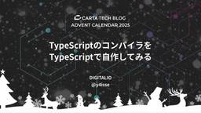
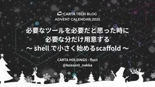
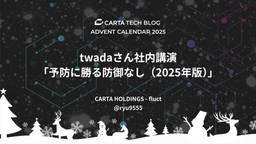
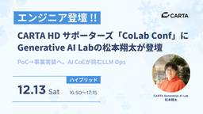
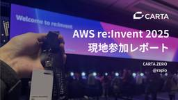
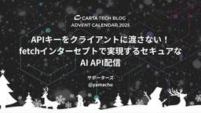
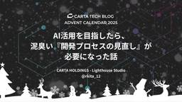

CARTA TECH BLOG
https://techblog.cartaholdings.co.jp/
CARTA HOLDINGS公式エンジニアブログです。CARTA HOLDINGSのエンジニアリング関連の情報、 イベント, エンジニアたちの様子などを投稿しています。
フィード

TypeScriptのコンパイラをTypeScriptで自作してみる
CARTA TECH BLOG
はじめに 新卒でCARTA HOLDINGSに入社しDIGITALIOに配属された25卒のやせと申します！ 普段の業務ではTypeScriptやGoを使ってシステム開発を行っています。最近は趣味と勉強を兼ねて、「TypeScriptをアセンブリに変換するコンパイラ」をTypeScript+Denoで作っているので今回はその話をしたいと思います。 特に何かの役に立つとかでもないのですが、普段何気なく使っているものが、裏側でどのように動いているのかを知りたいなと思い始めてみました！ 今回できたもの 今回作ったコンパイラでは、TypeScriptのコードをアセンブリ（x86）に変換します。 通常、T…
2日前

必要なツールを必要だと思った時に、必要な分だけ用意する 〜 shell で小さく始めるscaffold 〜
CARTA TECH BLOG
CARTA fluct エンジニア の なっかー @konsent_nakka です。 この記事は CARTA アドベントカレンダー2025 11日目の記事です。 techblog.cartaholdings.co.jp techblog.cartaholdings.co.jp レイヤードアーキテクチャで構築されたアプリケーションでAPIを追加する際、毎回似たようなファイル構造を作る必要があり、実装に時間を取られていました。 ふと思いつき2時間くらいでshellとMakefileを利用してscaffoldingツールを作りました。 課題 アプリケーションが成長するにつれて、新しいAPIやリソー…
2日前

twadaさん社内講演 - 「予防に勝る防御なし（2025年版）」 1
1
CARTA TECH BLOG
この記事は CARTA アドベントカレンダー2025 10日目の記事です。 techblog.cartaholdings.co.jp fluctで働いているryuです。 本日、twadaさんに「予防に勝る防御なし（2025年版） - 堅牢なコードを導く様々な設計のヒント」の社内講演をしていただきました。 オンラインで開催をし、講演を聞きながら、slackで実況もされていました。 当日は、120人程度参加し、賑わっていました（CARTA HOLDINGSのエンジニアは全体で180人程度）。 社内講演の開催のきっかけとtwadaさんとの繋がり、講演の様子、私の感想を書いていきます。 開催のきっかけ…
3日前

CARTA HD、U35限定テックカンファレンス「CoLab Conf（コラコン）」に Generative AI Labの松本翔太が登壇
CARTA TECH BLOG
～プラチナスポンサーとして協賛する本カンファレンスにて、事業実装AIエンジニアリングの事例を紹介～ 株式会社CARTA HOLDINGS(東京都港区、代表取締役 社長執行役員：宇佐美 進典)は、2025年12月13日（土）に虎ノ門ヒルズステーションタワーにて開催される、U35限定テックカンファレンス「CoLab Conf（コラコン）」にプラチナスポンサーとして協賛し、事業横断AIエンジニアリング組織「CARTA Generative AI Lab」に所属する松本翔太が登壇することをお知らせします。 松本は「PoC→事業実装へ。AI CoEが挑むLLM Ops」と題し、広告クリエイティブ判定の事…
3日前

AWS re:Invent 2025 現地参加レポート 1
CARTA TECH BLOG
アイキャッチ こんにちは。CARTA ZEROに所属するWebエンジニアのらぴおです。 2025年12月1日〜2025年12月4日の4日間、ラスベガスにてAWSが開催する世界最大規模のテックカンファレンスの「AWS re:Invent 2025」に参加しました。 本記事では私のre:Inventでの体験や感じたことについて書き記したいと思います。 参加した背景、目的 私は今回のre:Invent参加が初めてでした。元々インフラやクラウドの技術に興味があることや、私が所属するチームでAWSを積極的に活用していることもあり、re:Inventには以前から興味がありました。 一方で、re:Inven…
3日前

APIキーをクライアントに渡さない！fetchインターセプトで実現するセキュアなAI API配信
CARTA TECH BLOG
この記事は CARTA アドベントカレンダー2025 9日目の記事です。 4行まとめ BizサイドにAPIキーを直接配らずに、MCP Serverとやり取りできるアプリを提供したい…ので！Electronでやってみよう ElectronのMainProcessのglobal.fetchのoverrideで、Gemini APIへのリクエストを透過的にProxyする API側でGeminiのAPIキーを管理し、リクエストを再送する n8nのCustom Nodes便利すぎ はじめに こんにちは、サポーターズの ちゅうこ（@y_chu5） です。 CARTA / サポーターズではGoogle Wo…
5日前

AI活用を目指したら、泥臭い「開発プロセスの見直し」が必要になった話 1
CARTA TECH BLOG
はじめに こんにちは、Lighthouse Studioでエンジニアをやっている きっちゃん です。 私の所属する Lighthouse Studio の開発チームでは、今年の4月からAIエージェントを活用して開発を効率化するために、「AI夕会」と題した定例を毎日行い、チーム全体で取り組みを進めてきました。 しかし、実際にチームで本格的な活用を始めてみると、すぐにひとつの現実にぶつかりました。 「今の開発プロセスのままAIを入れても、うまく使いこなせないのではないか」 この記事では、AI活用を目指した結果として、むしろ泥臭く業務改善に向き合うことになった半年間の試行錯誤をまとめます。 AIエー…
5日前

サポーターズの「1dayスピード選考会」開発：教科書通りのスクラムから、自分たちの「型」を作るまで
CARTA TECH BLOG
はじめに サポーターズで7月にCTOになりました、あらたです。 今回は、「1dayスピード選考会」（1日で複数の企業と面接できるイベント）のシステム化という、およそ半年間のプロジェクトで実践した「開発プロセス」と「その裏側の試行錯誤」についてお話しします。 今回のプロジェクトでは、チームでスクラム開発に取り組みました。ただし、教科書通りに遂行するのではなく、チームの状況に合わせてプラクティスを取捨選択し、より良い形を模索しながら進めていきました。 その過程を共有することで、「そんなやり方もありなのか」「自分たちももっと崩していいんだ」といった、前向きな発見をしていただければ嬉しいです。 背景：…
9日前
インターン生が見た、DSP開発での「桁違い」なトラフィックとの付き合い方
CARTA TECH BLOG
こんにちは！CARTA ZERO プロダクト管轄 DSP部で11月から長期インターンをしている足利（あっしー）です。 突然ですが皆さんはWebエンジニアの仕事といわれて、どのようなものを想像しますか？ ReactやVue.jsで使いやすいUIを作り込んだり、あるいはユーザーが抱える課題を解決する新機能をリリースして喜んでもらったり…。私もインターンに参加するときには、そういった開発風景を想像していました。しかし、配属されたインターネット広告の世界は、想像していたWeb開発とは少しだけ景色が違っていました。 特にインターネット広告の世界では、データ駆動であること、そして高スループット・低レイテン…
10日前
2025年 は Web Components 元年だった？？ をUIライブラリを見ながら振り返る
CARTA TECH BLOG
Web Components を見ることが増えた 2025年 こんにちは。CARTA でフロントエンド開発をしている @hako584 です！ この記事は 2025 年のアドベントカレンダー 2日目です。 2025年は実世界でもWeb Componentsを多く見るようになった年でした。そこであらためて、 Web Components 採用 UI ライブラリ を中心にまとめてみました。 みんながよく使う「あれ」もWeb Components だよ！ さて、まずは世の中でどれぐらいWeb Componentsがあるか見てみましょう。 GitHub github は web components …
10日前
Lightdashの魅力とfluctにおける導入事例
CARTA TECH BLOG
こんにちは、fluctでデータエンジニアをやっているyanyanです。今回はfluctで新たなBIツール「Lightdash」の利用を開始したので、導入に至った背景と利用を開始してみてどうだったかというのを記事にしてみました。 背景 fluctはインターネット広告の配信をしている会社です。広告を掲載して収益を得たいメディアに対して、いい感じに広告を配信する仕組みを提供しています。そんなfluctでは、主に社内で広告配信の実績を確認したり分析する用途でBIツールを使っています。 これまではAWSのAmazon QuickSightとRedashの２つが使われてきました。Amazon QuickS…
11日前
CARTA アドベントカレンダー2025まとめ
CARTA TECH BLOG
毎年、技術に問わずゆるーく記事を上げていっています。 ここはCARTA TECH BLOGアドベントカレンダーのまとめ記事です。 新しい記事が追加されるごとに更新していくので、気になる方は定期的にチェックみてくださいね！ 記事一覧 12/1: @shuzon techblog.cartaholdings.co.jp 12/2: @hako584 techblog.cartaholdings.co.jp 12/3: @yanyan techblog.cartaholdings.co.jp 12/4: @wolfmagnate techblog.cartaholdings.co.jp 12/5 :…
13日前
1年カンファレンスを見張ってプロポーザル登壇10倍にした登壇文化形成
CARTA TECH BLOG
こんにちは、技術広報の @ShuzoN__ です。 今回は「1年カンファレンスを見張ってCfP 登壇10倍にした登壇文化形成」について書きます。と、言っても登壇者が1->10人 になった程度なのですが、思っていたよりも遠い道のりでした。 CARTAの場合は200人弱のエンジニアがいるため、ちょっとやそっとの施策や声がけでは全体に与える影響は大変小さく、少しずつ変化を生むだけでも地道さが必要でした。そこで2025年の1年で向き合っていたことについてお話していきます。 tl;dr 重要なのは以下の3点です。 エンジニアの負担を減らし、参加のハードルを下げること 最初の数人を全力でサポートし、成功体…
13日前
”速度”は信頼を勝ち得る最大の武器。企画から改善まで全部やる Social AdTrim開発の裏側
CARTA TECH BLOG
はじめに CARTAの広範なデジタルマーケティング商流を担うCARTA ZERO。その中核でSNS運用コンサルティングサービスを担うのが「Social AdTrim」です。AdTrimの開発チームでは、「言われたものを作る開発」とは対極にある「企画から改善まで“全部やる”フルサイクル開発」 が実践されています。 「”速度”は信頼を勝ち得る最大の武器」と語るPM兼エンジニアのAdTrim開発部長 宇治川は、いかにして裁量とスピードを両立させているのでしょうか。 本記事では、CARTA ZERO CTO 河村が組織の全体像とエンジニアリング文化を、続いて宇治川がAdTrim開発の裏側にある技術スタ…
18日前
【イベント登壇文字起こし】新卒からCTOへ ― 師弟で語るキャリアの軌跡
CARTA TECH BLOG
イベントについて 2025年10月21日、一般社団法人日本CTO協会主催のイベント「新卒からCTOへ ― 師弟で語るキャリアの軌跡」が開催されました。 イベントページ: 新卒からCTOへ ― 師弟で語るキャリアの軌跡 登壇したのは、CARTA HOLDINGS執行役員CTOの鈴木健太、その前任者であり、現在は株式会社LayerXでPrincipalを務める小賀昌法。 VOYAGE GROUP時代にCTOだった小賀と、その下で新卒としてキャリアをスタートさせた鈴木。彼らの師弟関係は、VOYAGE GROUPがCARTA HOLDINGSへと変遷を遂げる激動の時代の中で、いかにしてCTOのサクセッ…
1ヶ月前
【登壇全文レポート】HonoConf 2025 にゴールドスポンサー協賛 & LT登壇!!
CARTA TECH BLOG
CARTA HOLDINGS 技術広報 @ShuzoN です！ 2025年10月18日(土)、docomo R&D OPEN LAB ODAIBAにて開催された技術カンファレンス「Hono Conference 2025」に、株式会社CARTA HOLDINGSはゴールドスポンサーとして協賛いたしました。 また、当社エンジニアのねこや(@nekoya)がLightning Talkに登壇しましたので、その模様をレポートします！ 「Hono Conference 2025」とは Hono Conferenceは、Webフレームワーク「Hono」のコントリビューターとユーザーによるカンファレンスで…
2ヶ月前
CARTA HD、Webフレームワークの祭典「Hono Conference 2025」にゴールドスポンサーとして協賛、エンジニアの三宅 涼が登壇！
CARTA TECH BLOG
株式会社CARTA HOLDINGS(東京都港区、代表取締役 社長執行役員：宇佐美 進典、東証プライム市場：証券コード3688)は、2025年10月18日(土)にdocomo R&D OPEN LAB ODAIBAにて開催される技術カンファレンス「Hono Conference 2025」に、ゴールドスポンサーとして協賛いたします。また、同カンファレンスにおいて、当社エンジニアである三宅 涼によるプロポーザルが採択され、Lightning Talk（ライトニングトーク）に登壇することをお知らせいたします。 ■Lightning Talk（ライトニングトーク）概要 タイトル 「エンジニアインター…
2ヶ月前
CARTA HD、国内最大規模の学生向けテックカンファレンス「技育祭2025【秋】」にプラチナスポンサーとして協賛！CTO鈴木ら多様なエンジニア3名が登壇！
CARTA TECH BLOG
株式会社CARTA HOLDINGS(東京都港区、代表取締役 社長執行役員：宇佐美 進典、東証プライム市場：証券コード3688)は、2025年10月11日(土)・12日(日)にオンラインおよび東京会場にて開催される国内最大規模の学生向けテックカンファレンス「技育祭2025【秋】」にプラチナスポンサーとして協賛します。 本イベントでは、「AIに淘汰されない技術力とは？」をテーマに、当社執行役員CTOである鈴木健太、株式会社テレシーのデータサイエンスエンジニアである早坂琢真、株式会社DIGITALIOのソフトウェアエンジニアである光岡 宏海の3名が登壇します。また、現地ブースでは限定ノベルティが当…
2ヶ月前
GitHub Projectsをチームタスク管理に利用して3Q経ったのでプラクティスをまとめる
CARTA TECH BLOG
はじめに 株式会社DIGITALIOのぐり（@_guri3）です。 現在自分が所属するチームでは日々取り組むことを管理するツールとしてGitHub Projectsをメインに利用しています。大体3クォーター分くらいの期間を試行錯誤しつつ運用して来た結果として、自分たちのチームの利用方法を一例として紹介していこうと思います。 元々、GitHub Projectsではない別のプロジェクト管理ツールを使っていたのですが、日々行われる開発の大部分の情報が集約されるGitHubとプロジェクト管理ツールの中で二重管理になる情報やどちらに書いてあるべきか迷う情報が出て来てしまうなどといった問題がありました。…
2ヶ月前
利益を直接産まないお仕事でどう評価されるか
CARTA TECH BLOG
この記事は社内向けに書いたブログを外部向けに修正したものです。 みなさん、おはようございます！ CARTA fluct エンジニアのゆうちゃんです。 僕がいるチームではいわゆる「管理画面」を長いこと作っていました。かれこれ1年半以上でしょうか。 ここにおける管理画面とは社内外で利用されるプロダクトにおいて、社内の人間だけが利用するシステムを指します。ビジネス運用上必要であり、顧客が利用するわけではないので直接的に利益には影響しません。 大半の事業において「管理画面」と呼ばれるものはおおむね存在し、開発され続けるものだと思われます。 しかしそれが直接的に事業に売り上げをもたらすことはほぼありませ…
2ヶ月前
【総勢100名超/5人登壇】 社内エンジニアイベント「TECH GARDEN」 開催レポート!!!
CARTA TECH BLOG
技術広報の @ShuzoN です。今回は2025/07/02 に開催された社内エンジニア向けイベント「CARTA TECH GARDEN」のレポートです！ なんと参加者はオンオフあわせて100人超(CARTAエンジニアの6割)！ 会自体も満足度の高く熱いイベントとなりましたー！👏 この記事では、話されたセッションの見どころと会全体をダイジェストでお届けします。 イベントの狙い 約1年ぶりの開催となった今回は「カンファレンス再演」をキーに、 カンファレンス・イベントに登壇した5名のエンジニアがそれぞれ再演をしてくれました。 テーマは 「答えのないものに一歩踏み出す」 昨年比でカンファレンス登壇数…
3ヶ月前
Fetch API (Blink) のソースコードを眺めてみる
CARTA TECH BLOG
こんにちは。Lighthouse Studio の yoko です。普段お世話になっているブラウザの内部実装を少し眺めて見ました。 今回は Fetch API のソースコードを見ていきます。途中で力尽きましたが、Fetch API の実装を追うための雰囲気だけ感じてもらえれば嬉しいです。 今回の Fetch API は、 Chromium のレンダリングエンジンである Blink の実装を眺めていきます。 Chromium とは https://www.chromium.org/Home/ Google が主導して開発されているオープンソースのブラウザ。Chrome 含め様々なブラウザのベース…
3ヶ月前
.NET MAUI HybridWebViewで作る！リアルタイム商品ピックアップアプリ開発記
CARTA TECH BLOG
こんにちは、サポーターズのちゅうこ(yamachu)です。 つい最近までコミックマーケット106（C106）に向けて、記事を書いたりアプリケーション開発をしていました。 私の所属するサークルでは、同人誌即売会のようなイベント会場で使うことを想定したレジシステムの開発を行っています。 作成しているレジシステムは大まかに以下の機能に大別されます。 レジとしての入力インタフェース 在庫管理 レシート発行 商品ピックアップ支援 C106では商品ピックアップの改善に注力し、そのためのモバイルアプリケーションを作成していました。 この記事では、そのために作成したモバイルアプリケーションを支える技術の一部を…
3ヶ月前
元留学生はLLM時代で日本語の勉強を頑張る
CARTA TECH BLOG
CARTA ZEROでエンジニアをしているmarching-cubeです。 2007年の春、ポーランドから留学生として日本へやってきました。 毎年夏になると、日本語の小説（たいていはミステリ）を一冊買い、今度こそ最初から最後まで読むぞと自分に約束する。残念ながら、いざ勉強となると、つい教科書どおりにやってしまい、ページを飛ばさず一語一句を追い、意味も全部調べてしまう。このやり方は驚くほど時間がかかり、最後まで読み切る根気が続かないことが多い。だいたい100〜200ページ進んだあたりで、仕事や生活に引き戻される。今年も例外ではなかったが、毎回の試みから学ぶことは多い。 学ぶことは根気と努力だが、…
4ヶ月前
primeNumber × CARTA 同姓同名のCTOでPodcast録ってきた
CARTA TECH BLOG
CARTA技術広報 ShuzoNです。 先日、株式会社primeNumber（以下、pN）のオフィスにて、primeNumber CTO 鈴木健太さんと、CARTA HOLDINGS(以下、CARTA) CTO 鈴木健太による交流企画、略して「suzuken会」を実施しました。 左: primeNumber CTO 鈴木健太, 右: CARTA CTO 鈴木健太 そもそもこの企画は「同姓同名のCTOがいるらしいから、一度会って話してみよう！」というシンプルなきっかけ から始まりました。なんと同姓同名かつ同い年の2人。 第1弾はCARTAのオフィスで開催し、今回は第2弾としてpN社さんの素敵なオ…
4ヶ月前
毎日が謎解きのよう。fluctのテクニカルサポートを支えるCREチーム長谷川さんにインタビュー！
CARTA TECH BLOG
登場人物 長谷川 卓 株式会社fluct プロダクト開発本部 グロース部 CRE チームリーダー 大学院卒業後、金融系SIerに入社し、銀行間ネットワークのメンテナンスや銀行システムの共通基盤の企画・運用に携わる。2013年、アドテク企業でサプライサイドのバックエンドおよびフロントエンド開発に従事。2015年、VOYAGE GROUP（現CARTAHOLDINGS）に入社し、子会社fluctにてGoogle広告プロダクトのサポート業務に従事。2020年にfluct退社後、2023年に再入社しCREチームにジョイン。2024年より同チームリーダー。 fluctとCREについて -- fluctの…
4ヶ月前
商業誌『技術広報の教科書』 にコラム寄稿させていただきました
CARTA TECH BLOG
技術広報 @ShuzoN です。この度、Timee DevRel かわまたさんが執筆なさった『技術広報の教科書』にコラム寄稿をさせていただきました👏 【拡散お願いします】9月11日に『技術広報の教科書』を出版します！既にAmazonなどで予約可能です！人事・広報・エンジニアが兼務から始める、というサブタイトル通り兼務からでも技術広報を始められる手助けになればと思い、執筆しました！予約お待ちしております！https://t.co/sHrpsJxuGp— かわまた／狂気の人 (@r_kawamata) 2025年8月7日 私はハイブリッドイベントおよびその配信方法について初学者に向けたナレッジを寄…
4ヶ月前
PHPカンファレンス関西2025に登壇してみて、やっぱ登壇はいいぞと思った夏の日
CARTA TECH BLOG
まとめ 登壇面白い 登壇で人に認知されるのはすぐ PHPerKaigiの実行委員長である長谷川さんにタイトルを褒められて嬉しい 登壇はすぐにFBが帰ってくるので思考の整理にも良いし、モチベに繋がる 40分登壇は時間調整がかなり難しいので、時間調節でカットしやすい余談を最後に組み込んでおくとコントロールしやすい この時、時間が余ってれば膨らませて話せるような内容だとなお良い しょうちゃん、めっちゃおすすめ 登壇 7月19日神戸にて PHPカンファレンス関西2025 に登壇してきました。 https://speakerdeck.com/nakka/php-money-management-endi…
5ヶ月前
AIに聞いても知識が身につかないのはなぜなのか
CARTA TECH BLOG
サポーターズで働いています、新卒2年目の@fuchio_gtです。 先日、後輩とOJT振り返りをしていた時に、AIを利用した学習方法について話しました。 その時の私のお気持ちを備忘録としてブログに残しておこうと思います。 この記事で伝えたいこと アウトプットが知識を定着させる 学習時には「疑問の細分化を自分で行う姿勢」が大事 思考の主導権をAIに渡してはならない はじめに 業務中、難解なコードに張り倒されることってありますよね。 Scalaを触り始めてもうすぐ2年経つっていうのに、未知の概念がわんさか出てきます。 苦しい。 そんな時はAIです。 なんでもかんでもブチこんでみて、「なにこれ」って…
5ヶ月前
『SQLアンチパターン 第2版』の翻訳レビュー会を主催して得た学び
CARTA TECH BLOG
fluctで働いているryuです。 CARTA HOLDINGSでは、t-wadaさんに技術コーチとして携わっていただいています。 そのt-wadaさんが監訳を務める SQLアンチパターン 第2版 の翻訳レビューにCARTA HOLDINGSのエンジニアたちが携わらせていただきました。 今回は、翻訳レビューに携わった経緯、開催したレビュー会、レビュー会の感想について書いていきます。 きっかけ CARTA HOLDINGSでは、もう何年もずっとt-wadaさんと毎週読書会を開催しています。 techblog.cartaholdings.co.jp 昨年の7月頃、t-wadaさんとの読書会で1冊の…
5ヶ月前